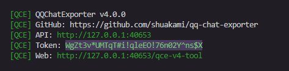
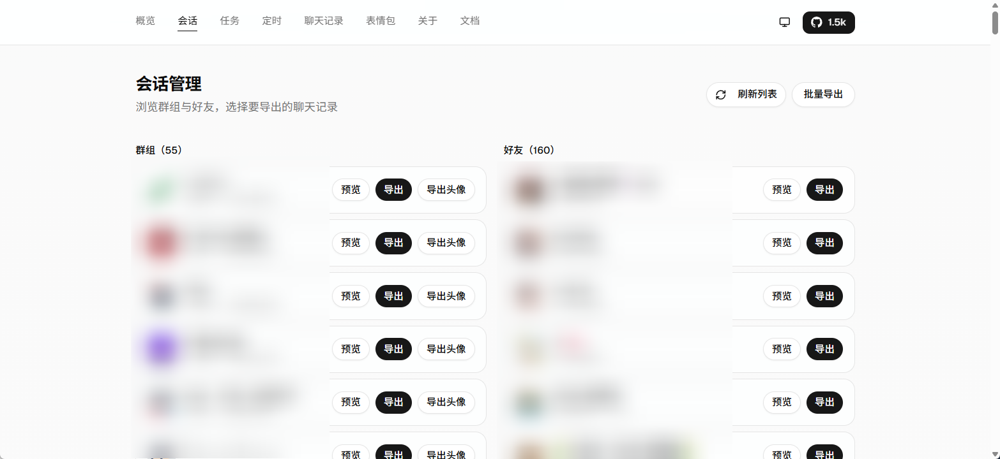
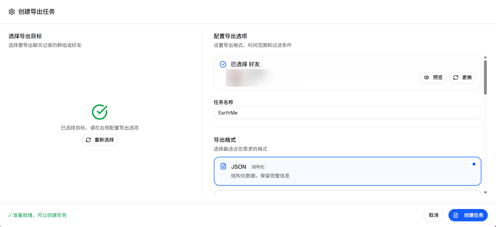

使用手册
QCE 能把 QQ 聊天记录（好友/群聊）保存到电脑上。支持导出成网页（HTML）、数据（JSON）等格式，且能完整下载图片和视频。
目录
下载
可用的下载包
| 包类型 | 平台 | 说明 | 文件 |
|---|---|---|---|
| Shell 模式 | Windows x64 | 独立无头 QQ，适合服务器/自动化 | NapCat-QCE-Windows-x64-vxxx.zip |
| Shell 模式 | Linux x64 | 独立无头 QQ，适合服务器/Docker | NapCat-QCE-Linux-x64-vxxx.tar.gz |
| Framework 模式 | Windows | QQNT 插件，与桌面 QQ 共存 | NapCat-Framework-QCE-vxxx.zip |
去 GitHub Releases 下载。
如何选择模式？
Shell 模式
独立运行，需要单独登录 QQ，适合服务器部署和自动化备份。这个模式下 QQ 在后台无头运行，不需要桌面界面。
详细使用步骤请参考下方 启动 中的 "A. 完整模式" 部分
Framework 模式
作为 QQNT 插件运行，与正在使用的 QQ 共享登录，适合 Windows 桌面用户。这种模式与你的常用 QQ 集成，共享登录状态。
Framework 模式使用方法
- 下载
NapCat-Framework-QCE-vxxx.zip - 解压到合适的位置（如
C:\Users\你的用户名\Documents\） - 重要：退出已有的 QQ 登录！
- 运行
napiLoader.bat - 用手机扫码登录 QQ
- 在
security.json中查找token
如何找到 token？
按 `Win + R`，输入 `%USERPROFILE%\.qq-chat-exporter` 并回车，打开 `security.json` 文件，找到 `accessToken` 字段： 那么 `*lL@*7&PEfNk03t@h^4e@psZlFuAB8G#` 就是你要用的 token- 访问
http://localhost:40653/qce-v4-tool，使用找到的 token 进行操作
启动
不需要安装任何复杂的环境，下载解压就能用。更多下载选项请参考 下载 章节。
第一步：下载
去 GitHub Releases 下载对应系统的压缩包（比如 Windows 选 .zip），解压到一个文件夹里。
或者使用 下载 章节中提供的 Framework 模式下载。
第二步：选择模式启动
QCE 有两种启动模式，看你需要干什么：
A. 完整模式（我要导出聊天记录）
需要登录 QQ，能获取新消息。
- Windows：双击
launcher-user.bat - Linux：运行
./launcher-user.sh - 操作：看黑底白字的控制台窗口，用手机 QQ 扫码登录。
- 打开界面：浏览器访问
http://localhost:40653/qce-v4-tool，输入控制台里显示的Access Token。

控制台这个里面选的就是 Access Token
找不到 Token 或提示错误？
很简单，按住键盘上的
Win+R键，粘贴下面这段话并回车：%USERPROFILE%\.qq-chat-exporter在打开的文件夹里找到
security.json，右键用记事本打开，里面的 accessToken 对应的一长串字符就是你的 Token。比如：
这个{ "accessToken": "*lL@*7&PEfNk03t@h^4e@psZlFuAB8G#", "secretKey": "MVdUIkfAi#P4QyHrLeZQVdNG!esptU2fEnuNSZSb@or@4#4ARGV2NVLBdbSFD&Pi", "createdAt": "2025-12-16T10:42:01.818Z", "allowedIPs": ["127.0.0.1","::1"], "tokenExpired": "2026-01-28T10:26:03.879Z", "disableIPWhitelist": false, "lastAccess": "2026-01-21T10:27:37.619Z" }*lL@*7&PEfNk03t@h^4e@psZlFuAB8G#就是我的 Token
B. 独立模式（我只看以前导出的文件）
不需要登录 QQ，只能查看已下载的备份。
- Windows：双击
start-standalone.bat - Linux：运行
./start-standalone.sh - 操作：直接访问
http://localhost:40653/qce-v4-tool，无需 Token。
导出聊天记录
进入界面后，看左侧菜单的 会话 (Sessions)，这里列出了你的所有好友和群。
如何导出？
- 在列表中找到你想备份的好友或群（找不到点一下右上角"刷新"）。
- 点击右边的 导出 按钮。
- 在弹窗里选好格式和时间，点 创建任务。
- 去 任务 页面看进度，完成后点 打开文件位置。

关键设置说明
选什么格式？
- HTML：导出成网页，长得和手机 QQ 界面一样，带头像和气泡，适合人看。
- JSON：给程序员用的，或者用来做数据分析。
- TXT：纯文字，没图没表情，体积最小。
媒体资源（图片/视频）
- 默认会自动下载图片视频。
- 注意：导出 HTML 时会生成一个
.html文件和一个resources文件夹。千万别把它俩分开，否则图片会加载不出来。 - 推荐勾选"导出为 ZIP"，打包在一起最安全。
时间范围
- 不填就是导出所有历史记录。
- 想省时间可以只选最近一个月。

进阶玩法
批量导出（我想把所有群都存下来）
- 在 会话 页面点右上角 批量导出。
- 点 全选（或者手动勾选几个）。
- 点 导出选中，统一设置格式，挂机等它跑完就行。
定时自动备份（每天自动存增量）
不想每次手动点？可以设个闹钟自动跑。
- 去 定时 页面 -> 新建定时任务。
- 调度策略：比如选"每天"。
- 时间范围技巧：选 昨天。这样每天只存过去 24 小时的新消息，速度快。
- 合并：月底可以用 合并备份 功能，把每天生成的碎片文件拼成一个完整的大文件。
超大群导出（几十万条消息防止卡死）
如果是好几年的老群，消息量巨大（百万级），普通导出可能会让软件崩溃。
- 开启方法：导出时点开 高级选项，勾选 流式导出 (Stream Export)。
- 效果：它会把记录切分成小块处理，生成一个特殊的 ZIP 包，解压后打开
index.html依然能流畅浏览。
常见场景
场景 1：我要永久保存和某人的聊天记录
- 做法：找到好友 -> 导出 -> 选 HTML 格式 -> 时间留空（全量） -> 勾选 导出为 ZIP。
- 结果：你会得到一个压缩包，存到硬盘或网盘里。哪怕以后 QQ 没了，解压出来双击 html 文件就能完美重现聊天场景。
场景 2：定期备份活跃的群聊
- 做法：新建定时任务 -> 选群 -> 设为"每天"凌晨 3 点 -> 范围选"昨天"。
- 结果：软件每天半夜自动干活。如果想看完整的，用"合并备份"功能把它们连起来。
场景 3：导出百万消息的大群
- 做法：导出 -> 高级选项 -> 勾选 流式导出 -> 选 HTML。
- 结果：得到一个分段加载的网页包。看的时候滚轮滚到哪，它加载到哪，完全不卡。
场景 4：只想要文字，不要图片（省空间）
- 做法：导出时勾选 快速导出（跳过资源下载），或者格式选 TXT。
- 结果：速度极快，几秒钟搞定，文件只有几 MB。
遇到问题？ 开发文档和 API 可以在这里看：DeepWiki API Reference